Panduan Admin: Kode Undangan Toko
1. Apa itu kode undangan & aturannya
邀请码是什么、规则
Setiap toko punya 1 kode undangan 6 digit. Pelanggan memasukkan kode ini di aplikasi TailTopia (Pengaturan → Kode toko) dan langsung terhubung permanen dengan toko. Setelah itu, setiap belanja produk pelanggan di Toko (toko online aplikasi) memberi komisi untuk toko sesuai persentase komisinya.
每家门店有一个 6 位数字邀请码。顾客在 TailTopia App 的「设置 → Kode toko（门店码）」里填这个码，就和门店永久绑定；之后顾客在 App 商城（Toko）买商品，门店按返佣比例拿返佣。
| Hal 项目 | Aturan 规则 |
|---|---|
| Kapan kode dibuat 什么时候生成 |
Otomatis oleh sistem saat pendaftaran toko disetujui atau saat toko dibuat langsung oleh tim ops. Pendaftaran yang masih ditinjau atau ditolak belum punya kode.
门店审核通过或运营直接新建时，系统自动分配。审核中、已驳回的申请没有邀请码。 |
| Nomor kode 号码怎么来 |
Berurutan: toko pertama 000035, berikutnya +1. Tim ops tidak bisa memilih atau mengubah kode. Jika pembuatan toko gagal, nomor bisa terlewat dan tidak dipakai ulang.
按顺序分配：第一家 000035，之后每家加 1。运营不能自定义，也不能修改。建店失败时号码可能被跳过，不回收。 |
| 1 kode untuk berapa orang 一个码能绑多少人 |
Tidak terbatas. 不限人数。 |
| 1 pelanggan ke berapa toko 一个顾客能绑几家店 |
Hanya 1 toko, tidak bisa diganti atau diputus. Di admin juga tidak ada menu untuk mengganti.
只能绑 1 家，绑定后不能更换、不能解绑，后台也没有改绑入口。 |
| Pesanan yang dapat komisi 什么订单算返佣 |
Hanya pesanan produk di Toko aplikasi yang dibuat setelah pelanggan terhubung. Konsultasi dokter hewan, isi ulang PawCoin, dan buka fitur AI tidak dihitung.
只算绑定之后下单的 App 商城（Toko）商品订单；问诊、PawCoin 充值、AI 解锁不算。 |
| Masa kerja sama 合作期间 |
Komisi hanya didapat selama toko bekerja sama dengan TailTopia. Pesanan setelah toko berhenti bekerja sama atau tutup tidak memberi komisi. Komisi yang sudah tercatat sebelumnya (menunggu penyelesaian dan bisa ditarik) tetap dibayarkan.
门店只有在与 TailTopia 合作期间才能获得返佣。门店取消合作或关闭后的订单不计返佣；合作结束前已产生的「待结算」「可提现」照常支付。 |
Alamat admin: production https://mops.tailtopia.id/ops/login (staging mops-stag.tailtopia.id). Login dengan username dan kata sandi yang dibuat oleh super admin.
后台地址：正式环境 https://mops.tailtopia.id/ops/login（测试环境 mops-stag.tailtopia.id），用超级管理员开给你的用户名 + 密码登录。
Hak akses: meninjau pendaftaran butuh izin 「审核门店注册」 (Tinjau pendaftaran toko); membuat / menonaktifkan toko butuh 「管理门店」 (Kelola toko); hanya melihat toko dan kode butuh 「查看门店」 (Lihat toko). Template 「运营」 (Operasional) sudah punya semuanya. Jika tidak punya izin, halaman akan menolak; minta super admin untuk menambahkan.
需要的权限：审核申请要「审核门店注册」，新建 / 停用门店要「管理门店」，只看门店和邀请码要「查看门店」。「运营」模板默认都有；没权限时页面会拒绝操作，找超级管理员加。
2. Dua cara toko mendapat kode
门店拿到邀请码的两种方式
Cara A: Meninjau pendaftaran toko (toko daftar sendiri)
方式 A：审核门店的注册申请（门店自助注册）
Toko mendaftar di aplikasi web toko (merchant.tailtopia.id) lewat tombol “Daftar toko”. Setelah dikirim, toko hanya melihat halaman status “Sedang ditinjau”; toko belum bisa belanja stok dan belum punya kode.
门店在门店端（merchant.tailtopia.id）点「Daftar toko」（注册门店）提交资料后，看到的是「审核中」状态页，此时还不能进货，也没有邀请码。
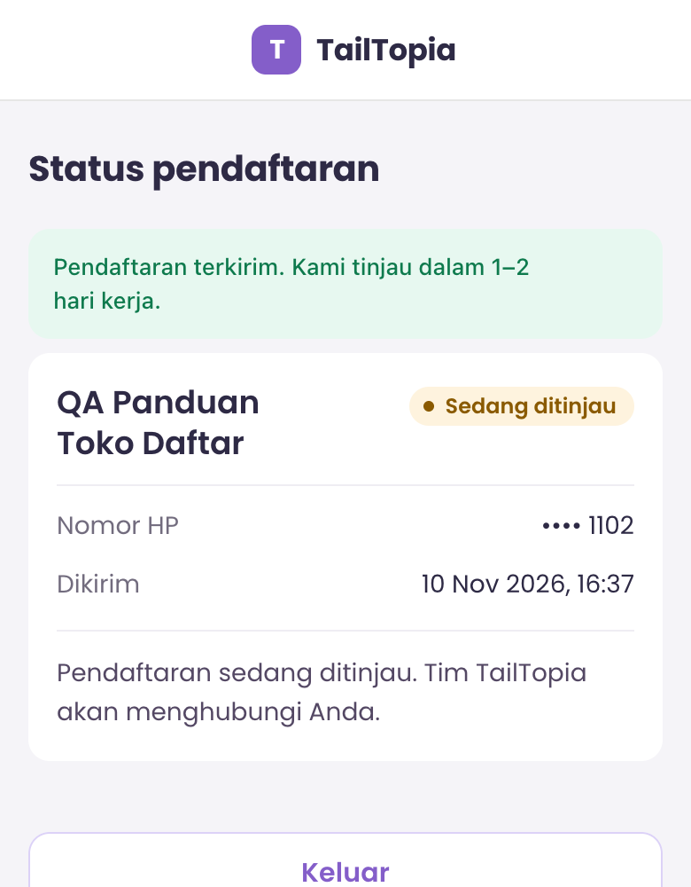
1Di menu kiri, klik 注册审核 (Tinjau pendaftaran). Di tab 待审核 (Menunggu tinjauan), cari pendaftarannya lalu klik 查看 (Lihat).
左侧菜单点「注册审核」，在「待审核」页签找到申请，点「查看」。
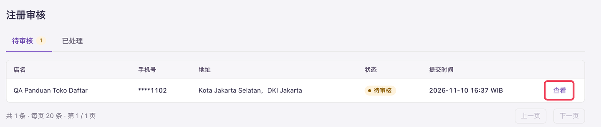
2Periksa data dan foto (1 foto depan toko, 1–8 foto dalam toko; klik foto untuk memperbesar). Sebaiknya telepon nomor HP pendaftar untuk memastikan ini pet shop yang nyata. V1 tidak memakai kode OTP SMS, jadi nomor HP hanya diverifikasi lewat langkah ini.
核对申请资料和照片（门头照 1 张、店内照 1～8 张，点击可看大图）。建议打电话核实登录手机号，确认是真实宠物店；v1 没有短信验证码，手机号只能靠这一步核实。
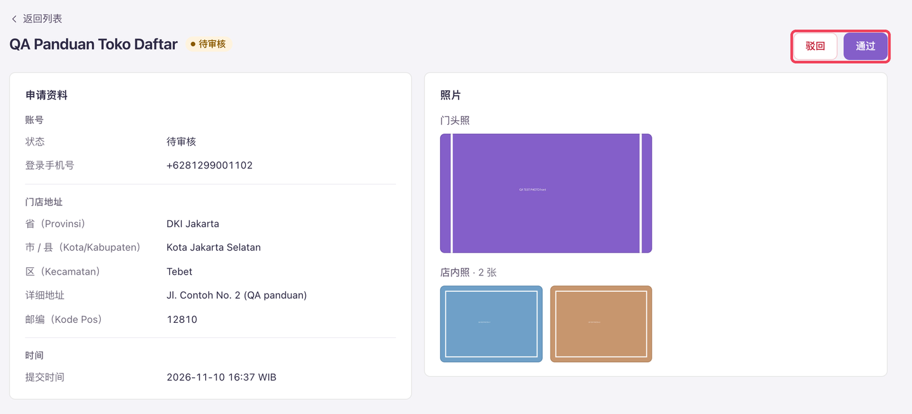
3Jika data sudah benar, klik 通过 (Setujui), lalu klik 通过 sekali lagi di jendela konfirmasi.
资料没问题，点「通过」，在弹窗里再点一次「通过」。
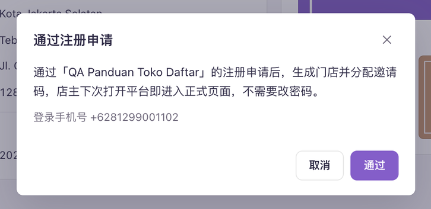
4Halaman otomatis pindah ke detail toko baru, dengan pesan “已通过，邀请码 xxxxxx” (Disetujui, kode undangan xxxxxx) di atas. Saat pemilik membuka aplikasi web toko lagi, ia langsung masuk ke halaman utama dan bisa melihat kodenya sendiri (lihat bagian 6). Biasanya tim ops tidak perlu mengirim kode secara terpisah.
页面自动跳到新门店的详情，顶部显示「已通过，邀请码 xxxxxx」。店主下次打开门店端就能直接进入正式页面，在里面看到自己的邀请码（见第 6 节），一般不需要运营另外发码。
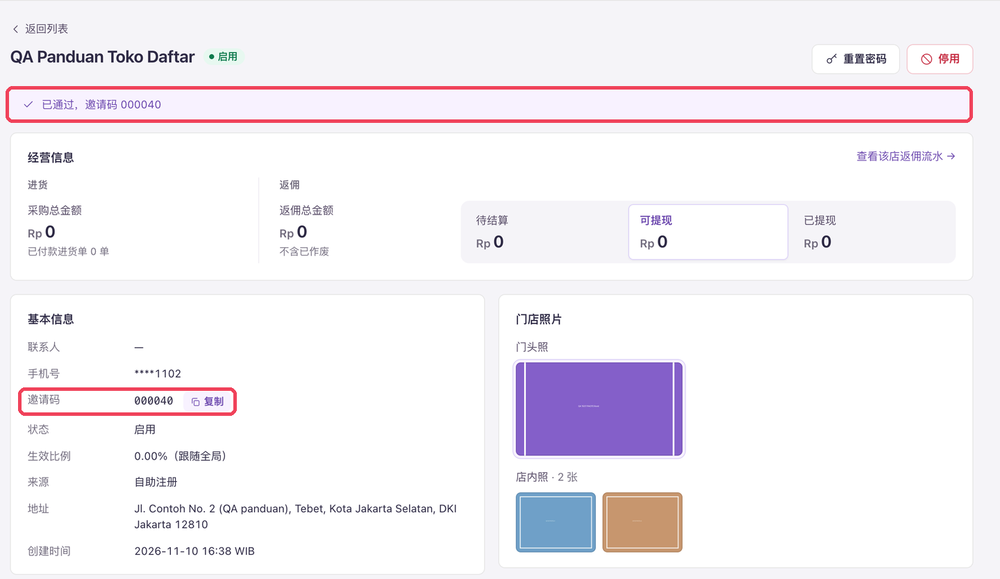
Jika data bermasalah: klik 驳回 (Tolak) dan wajib isi alasan (maks. 500 karakter). Alasan ini bisa dibaca pemilik toko saat login, jadi tulis dengan jelas apa yang harus diperbaiki, misalnya “Nama toko di foto depan tidak terbaca, mohon foto ulang.” Setelah ditolak, pemilik bisa memperbaiki data dan mengirim ulang, dan pendaftarannya kembali menunggu tinjauan.
资料有问题时：点「驳回」，必须填驳回原因（最多 500 字）。原因店主登录后能看到，所以要写清楚哪里要改，比如「门头照看不清店名，请重新拍一张」。驳回后店主可以改资料重新提交，申请会回到待审核。
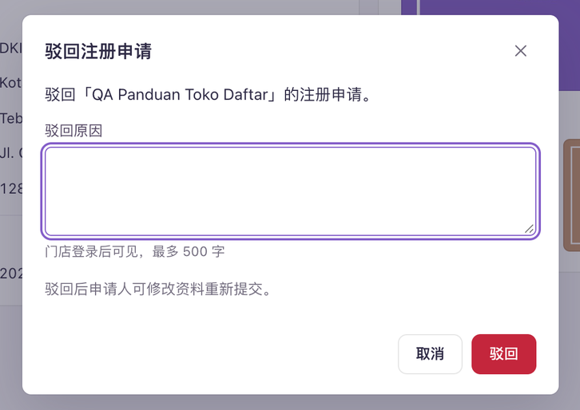
Cara B: Tim ops membuat toko langsung (toko hasil kesepakatan offline)
方式 B：运营直接新建门店（线下谈好的店）
1Di daftar 门店 (Toko), klik 新建门店 (Buat toko baru) di kanan atas. Isi nama toko, alamat (provinsi / kota-kabupaten / kecamatan / alamat lengkap / kode pos 5 digit), nomor HP untuk login, dan kata sandi awal. Nama kontak dan foto boleh dikosongkan.
在「门店」列表右上角点「新建门店」，填写店名、地址（省 / 市县 / 区 / 详细地址 / 5 位邮编）、登录手机号、初始密码；联系人和照片选填。
- Nomor HP boleh ditulis 08… atau +628…. Nomor yang sudah dipakai toko lain tidak bisa dipakai lagi.
登录手机号写 08… 或 +628… 都可以；已经被别的门店用过的手机号不能再用。
- Kata sandi awal minimal 8 karakter, berisi huruf dan angka.
初始密码至少 8 位，同时含字母和数字。
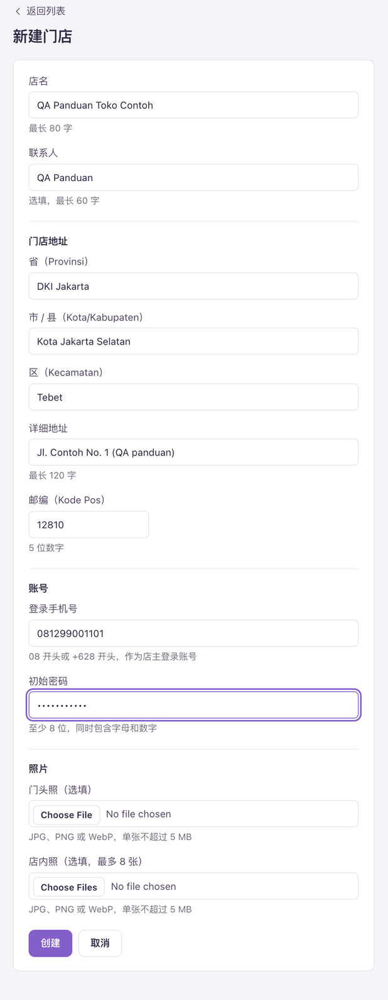
2Klik 创建 (Buat). Setelah berhasil, bagian atas halaman menampilkan 3 data: nomor HP login, kata sandi awal, dan kode undangan, masing-masing dengan tombol 复制 (Salin).
点「创建」。成功后页面顶部显示三项：登录手机号、初始密码、邀请码，每项都有「复制」按钮。
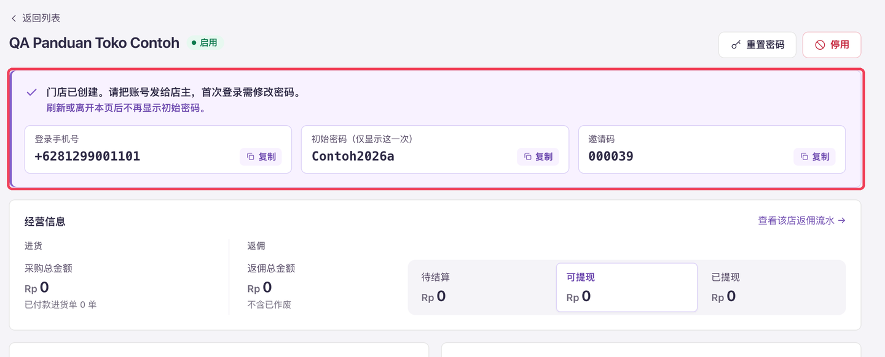
Sebelum meninggalkan atau memuat ulang halaman, salin atau screenshot ketiga data ini lalu kirim ke pemilik toko. Jika terlewat, satu-satunya cara adalah klik 重置密码 (Reset kata sandi) dan buat kata sandi baru. Pemilik wajib mengganti kata sandi saat login pertama; sebelum diganti, detail toko menampilkan “待改密：店主尚未修改初始密码” (Menunggu ganti kata sandi).
初始密码只显示这一次。离开或刷新页面前，把这三项复制或截图发给店主。漏发了只能点「重置密码」重新设一个。店主首次登录必须先改密码；改之前，门店详情的基本信息里会显示「待改密：店主尚未修改初始密码」。
3. Mencari kode undangan toko
查找门店邀请码
Saat pemilik toko atau pelanggan menanyakan kode sebuah toko, atau memberi sebuah kode dan bertanya toko mana:
店主或顾客来问某家店的邀请码，或者给你一个码问是哪家店：
1Buka daftar 门店 (Toko). Kolom 搜索 (Cari) bisa mencari nama toko, kode undangan, atau 4 digit terakhir nomor HP. Daftar toko langsung menampilkan kolom 邀请码 (Kode undangan).
进入「门店」列表，搜索框可以搜店名、邀请码或手机号后 4 位；列表里直接有「邀请码」一列。
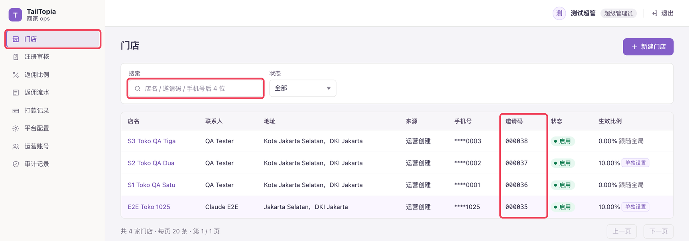
2Klik nama toko untuk membuka detail. Di bagian 基本信息 (Info dasar), ada tombol 复制 (Salin) di samping kode undangan.
点店名进入详情，基本信息里的邀请码旁有「复制」按钮。
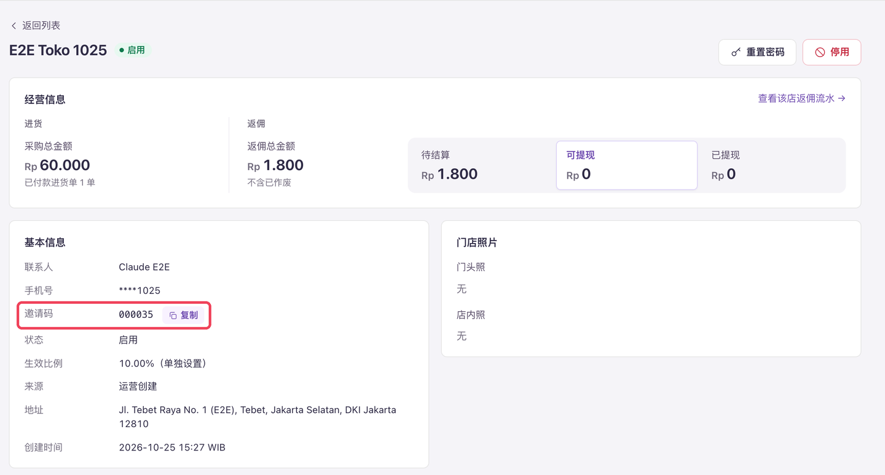
4. Melihat pengguna terhubung
查看绑定用户
Di bagian bawah detail toko, pilih tab 绑定用户 (Pengguna terhubung). Di sini terlihat pengguna aplikasi yang terhubung dengan kode toko ini: nama yang disamarkan, tanggal terhubung, dan jumlah pesanan untuk toko ini.
门店详情下方切到「绑定用户」页签，能看到用这家店邀请码绑定的 App 用户：脱敏昵称、绑定时间、归属本店的订单数。
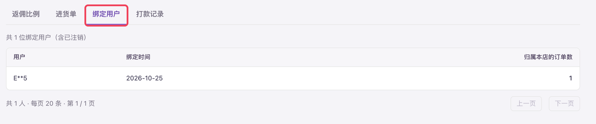
- Nama hanya menampilkan huruf pertama dan terakhir, tengahnya diganti ** (contoh: E**5). Admin dan aplikasi toko tidak menampilkan nomor HP, alamat, atau data pribadi pelanggan lainnya. Jika ditanya, jangan berikan data tersebut.
昵称只保留首尾各一个字，中间用 ** 代替（如 E**5）。后台和门店端都看不到顾客的手机号、地址等个人信息，被问到时不要另外提供。
- Di halaman yang sama ada tab 返佣比例 (Persentase komisi), 进货单 (Pesanan stok), dan 打款记录 (Catatan pembayaran). Nilai komisi terlihat di 经营信息 (Info usaha) di atas, atau klik 查看该店返佣流水 (Lihat riwayat komisi toko).
同一页还有「返佣比例」「进货单」「打款记录」页签；返佣金额看详情顶部的「经营信息」，或点「查看该店返佣流水」。
5. Toko berhenti bekerja sama atau tutup
门店取消合作或关闭
Jika toko berhenti bekerja sama dengan TailTopia atau tutup, nonaktifkan toko di admin: di kanan atas detail toko, klik 停用 (Nonaktifkan), lalu konfirmasi.
门店取消合作或关闭时，在后台停用该门店：门店详情右上角点「停用」，在弹窗里确认。
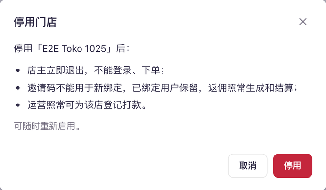
Jendela konfirmasi dan pesan di halaman toko menulis “已绑定用户保留，返佣照常生成和结算” (komisi pelanggan terhubung tetap dibuat dan diselesaikan). Artinya, saat ini sistem masih membuat komisi untuk pesanan baru setelah toko dinonaktifkan. Menurut aturan kerja sama, pesanan setelah kerja sama berakhir tidak memberi komisi; hanya komisi yang tercatat sebelum toko dinonaktifkan yang dibayarkan.
弹窗和门店页提示条写着「已绑定用户保留，返佣照常生成和结算」，也就是系统目前在停用后仍会为新订单生成返佣。按合作规则，合作结束后的订单不计返佣，只支付停用前已产生的部分。
| Untuk 对象 | Setelah toko berhenti bekerja sama / tutup 门店取消合作 / 关闭后 |
|---|---|
| Komisi baru 新返佣 |
Pesanan setelah kerja sama berakhir tidak memberi komisi.
合作结束后的订单不计返佣。 |
| Saldo yang sudah ada 已有余额 |
Komisi yang tercatat sebelum toko dinonaktifkan tetap dibayarkan. Yang bisa ditarik dibayar langsung; yang menunggu penyelesaian dibayar setelah berubah menjadi bisa ditarik. Toko nonaktif tetap bisa dicatat pembayarannya oleh tim ops. Karena pemilik tidak bisa login, ia akan menghubungi tim ops lewat WhatsApp.
停用前已产生的返佣照常支付：「可提现」直接打款；「待结算」等变成「可提现」后再打款。停用门店照常可以登记打款。店主已无法登录，会通过 WhatsApp 联系运营。 |
| Kode undangan 邀请码 |
Tidak bisa dipakai untuk koneksi baru. Di aplikasi, pelanggan akan melihat “Kode tidak valid”, sama seperti salah ketik kode.
不能再用于新绑定，顾客在 App 填码会提示「码无效」，和填错码的提示一样。 |
| Pelanggan yang sudah terhubung 已经绑定的顾客 |
Tetap terhubung ke toko ini dan tidak bisa pindah ke toko lain.
仍绑定在本店，不能改绑到别的门店。 |
| Pemilik toko 店主 |
Langsung keluar, tidak bisa login dan tidak bisa memesan.
立即被退出，不能登录、不能下单。 |
Membayar saldo setelah kerja sama berakhir
合作结束后怎么打款
Karena sistem masih mencatat komisi untuk pesanan setelah toko dinonaktifkan, angka “可提现” (bisa ditarik) di detail toko bisa lebih besar dari yang harus dibayar. Saat pemilik meminta pencairan, hitung dulu di 返佣流水 (Riwayat komisi):
因为系统停用后仍会给新订单记返佣，门店详情里的「可提现」可能比应付的多。店主来要提现时，先在「返佣流水」里算清楚：
- Pilih toko di 门店; di 下单日期 (Tanggal pesanan), isi tanggal akhir = tanggal toko dinonaktifkan.
「门店」选这家店；「下单日期」的结束日期选停用当天。
- Yang dibayar = jumlah “返佣金额” berstatus 可提现 (bisa ditarik) + baris 扣回 (potongan, angka negatif) − pembayaran yang sudah dicatat di tab 打款记录. Daftar ini tidak menampilkan total, jadi jumlahkan sendiri.
应付 = 状态为「可提现」的返佣金额 + 「扣回」行（负数）− 门店详情「打款记录」里已打的钱。列表不显示合计，需要自己加总。
- Baris 待结算 (menunggu penyelesaian) dalam rentang tanggal ini dibayar nanti setelah statusnya berubah menjadi 可提现.
这个日期范围内「待结算」的行，等变成「可提现」后再付。
- Daftar hanya menampilkan tanggal, bukan jam. Jika ada pesanan pada hari toko dinonaktifkan, cek dulu apakah pesanan itu dibuat sebelum toko dinonaktifkan.
列表只显示日期、不显示时间；停用当天如果有订单，要先确认它是否在停用之前下的。
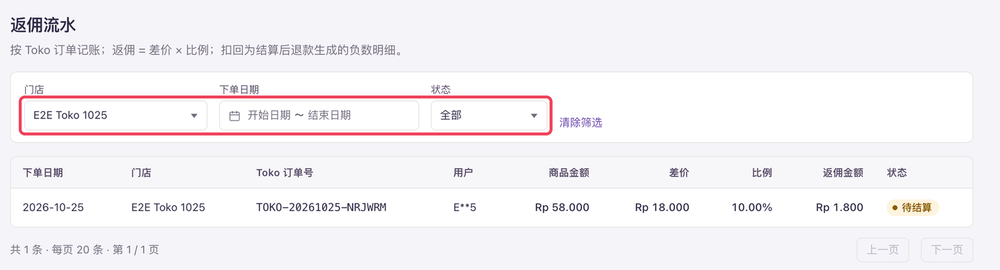
Setelah dinonaktifkan, detail toko selalu menampilkan pesan peringatan di atas, dan tombol kanan atas berubah menjadi 启用 (Aktifkan). Setelah diaktifkan lagi, semuanya langsung pulih, kode undangan tetap sama, dan tidak perlu ditinjau ulang.
停用后详情页顶部会一直显示提示条，右上角按钮变成「启用」。重新启用后立即恢复，邀请码不变，也不需要重新审核。
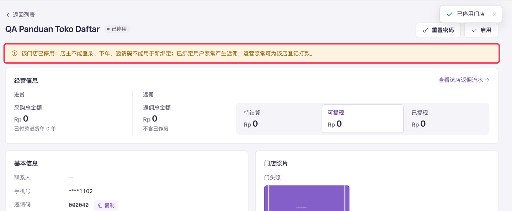
6. Yang dilihat pemilik toko
店主在门店端看到什么
Setelah login di aplikasi web toko, pemilik bisa melihat kode undangannya di menu bawah Komisi dan Akun, dengan tombol “Salin” untuk menyalin. Jika pemilik bilang tidak menemukan kodenya, arahkan ke dua halaman ini.
店主登录门店端后，在底部导航的「Komisi」（返佣）和「Akun」（账户）两页都能看到自己的邀请码，旁边有「Salin」（复制）按钮。店主说找不到码时，按这个指引他们。


Cara pelanggan memasukkan kode di aplikasi ada di dokumen “Panduan Kode Toko” di folder yang sama (bisa langsung dikirim ke toko).
顾客在 App 里怎么填码，见同目录的《门店邀请码使用说明》（印尼语 + 中文，可直接发给门店）。
7. Pertanyaan umum
常见问题
- Pelanggan salah memilih toko. Bisa dipindahkan?
- Tidak bisa. Satu akun aplikasi hanya bisa terhubung ke 1 toko; sistem tidak mendukung ganti atau putus koneksi, dan admin juga tidak punya menu untuk itu.
- 顾客绑错了门店，能帮他改吗？——不能。一个 App 账号只能绑一家店，系统不支持更换或解绑，后台也没有改绑入口。
- Pelanggan bilang kodenya “tidak valid”
- Cari kode tersebut di daftar toko. Jika tidak ketemu, kodenya salah ketik. Jika ketemu tapi statusnya 已停用 (Nonaktif), kode toko nonaktif tidak bisa dipakai untuk koneksi baru. Selain itu, satu orang maksimal mencoba 10 kali per jam; lebih dari itu muncul “Terlalu banyak percobaan”, cukup tunggu lalu coba lagi.
- 顾客说填码提示无效——先用码在门店列表里搜：搜不到就是码填错了；搜到但状态是「已停用」，停用门店的码不能新绑定。另外 App 里同一个人 1 小时最多尝试 10 次，超过会提示「尝试太频繁」，等一会儿再试即可。
- Pelanggan sudah terhubung, tapi pemilik toko tidak melihat pesanannya di komisi
- Yang dihitung hanya pesanan produk di Toko aplikasi yang dibuat setelah terhubung. Pesanan yang dibuat sebelum terhubung tidak dihitung, walaupun dibayar setelahnya. Konsultasi dokter hewan, isi ulang PawCoin, dan buka fitur AI juga tidak dihitung. Komisi muncul paling lambat 1 jam setelah pembayaran.
- 顾客说已经绑了，店主却说返佣里看不到他的订单——只算绑定之后下单的 App 商城商品订单，绑定前下的单（即使绑定后才付款）不算；问诊、PawCoin 充值、AI 解锁也不算。付款后最多 1 小时才会出现在返佣里。
- Toko sudah berhenti bekerja sama atau tutup. Apakah masih dapat komisi?
- Pesanan setelah kerja sama berakhir tidak memberi komisi. Komisi yang tercatat sebelumnya (menunggu penyelesaian dan bisa ditarik) tetap dibayarkan; cara menghitungnya ada di bagian 5.
- 门店已经取消合作或关闭，还能拿返佣吗？——合作结束后的订单不计返佣；结束前已产生的「待结算」「可提现」照常支付，算法见第 5 节。
- Bisa ganti kode toko jadi nomor yang mudah diingat?
- Tidak bisa. Kode dibuat berurutan oleh sistem; tim ops tidak bisa memilih atau mengubahnya.
- 能给门店换一个好记的邀请码吗？——不能。邀请码由系统按顺序分配，运营不能自定义或修改。
- Pemilik toko lupa kata sandi aplikasi toko
- Di detail toko, klik 重置密码 (Reset kata sandi), isi kata sandi baru (minimal 8 karakter, berisi huruf dan angka), lalu kirim ke pemilik secara langsung. Pemilik wajib ganti kata sandi saat login berikutnya. Reset juga membuka kunci login jika akun sedang terkunci.
- 店主忘了门店端密码——在门店详情点「重置密码」，填一个新密码（至少 8 位，含字母和数字），线下发给店主。店主下次登录要先改密码；重置也会解除登录锁定。
- Pemilik atau karyawan toko memakai kode tokonya sendiri di akun aplikasinya
- Di V1 tidak diblokir; komisinya tetap dihitung seperti biasa.
- 店主自己或店员用本店的码绑定自己的 App 账号——v1 不拦截，照常计返佣。